Kinematics
Suspension kinematics design for the ARG26 car, done in OptimumK.
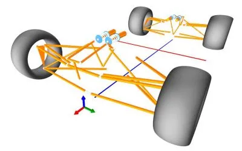
1ARG26 Suspension
ARG26 uses a double wishbone suspension at all four corners, with push link and rocker actuated dampers and blade style anti-roll bars front and rear.
NoteARG27 does not introduce major kinematics changes. The ARG27 suspension work is focused on rates.
| Item | ARG26 |
|---|---|
| Suspension type | Double wishbone, front and rear |
| Spring and damper actuation | Push link and rocker, front and rear |
| Dampers | Öhlins TTX25 MKII |
| Springs | Hyperco FSAE coil springs |
| Anti-roll bars | Blade style, front and rear |
| Rear toe control | Toe link |
| Link material | 4130 steel tube |
| Wheelbase | 61 in |
| Design ride height | 1.5 in |
| Car weight without driver | 440 lb |
2Kinematics Methodology
Kinematics are chosen by looking at how the suspension behaves at static ride height and how it changes as the car moves through sweeps in OptimumK. The sweeps checked are:
2.1Heave
- Camber change vs heave
- Steering angle vs heave
- Motion ratio vs heave
2.2Roll
- Camber change vs roll
- Lateral roll center position vs roll
- Vertical roll center position vs roll
2.3Steering
- Left and right steer angles vs steering wheel angle
3Expected Motion
Each sweep needs a range to run over. The ranges come from the motion the car is expected to see on track.
3.1Heave
The heave sweep runs from full compression to full droop. For ARG26 that is 2 in of compression to TBD in of rebound.
3.2Load Cases
The load cases were determined by our unsprung lead, Parker. She compiled racing data from the IMU on the PDU to get the acceleration cases. The IMU does not sit at the CG, so the data is post processed to the CG first with the IMU CG telemetry corrector, which uses:
aCG = aIMU − α × r − ω × (ω × r)
where α is the angular acceleration, ω is the angular velocity, and r is the position of the IMU relative to the CG.
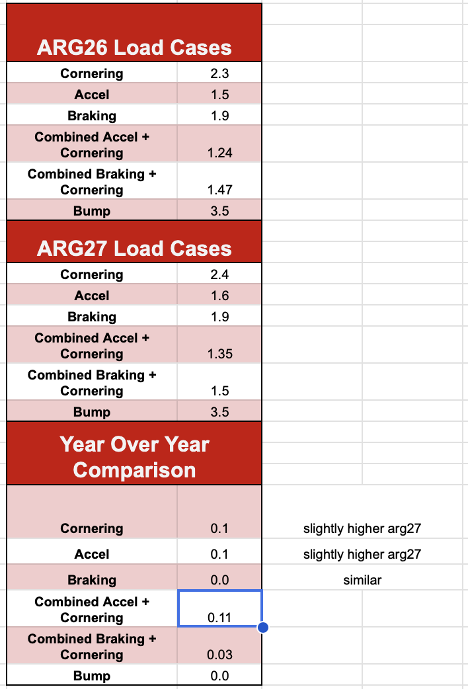
The combined cases apply the listed acceleration both laterally and longitudinally. Bump is vertical only. ARG27 is slightly higher in cornering and accel, and similar in braking.
3.3Pitch and Roll Gradients
With the load cases, the pitch and roll of the car can be estimated by multiplying each acceleration by its gradient. The pitch gradients come from the Pitch sheet of the SU26 Parameters and Analysis spreadsheet: −0.523 deg/g in dive and −0.556 deg/g in squat. The roll gradient is designed to fall between 0.55 and 0.7 deg/g. The maximum, 0.7 deg/g, is used here to get the largest range of motion.
3.4Summary
| Motion | Load case | ARG27 |
|---|---|---|
| Heave | Full travel | 2 in compression to TBD in rebound |
| Roll | Cornering | 1.68° |
| Dive | Braking | 0.99° |
| Squat | Accel | 0.89° |
| Roll Dive | Combined braking + cornering | 1.05° 0.78° |
| Roll Squat | Combined accel + cornering | 0.95° 0.75° |
4Bump Steer
4.1OptimumK Sign Convention
- +Heave = rebound
- −Heave = compression
- Positive toe = toe out
- Negative toe = toe in
4.2ARG26 Bump Steer
On ARG26, the front toe changed along a curve of about 0.7° across the wheel travel, and the rear toe changed linearly at −0.38 deg/in designed and −0.40 deg/in measured.
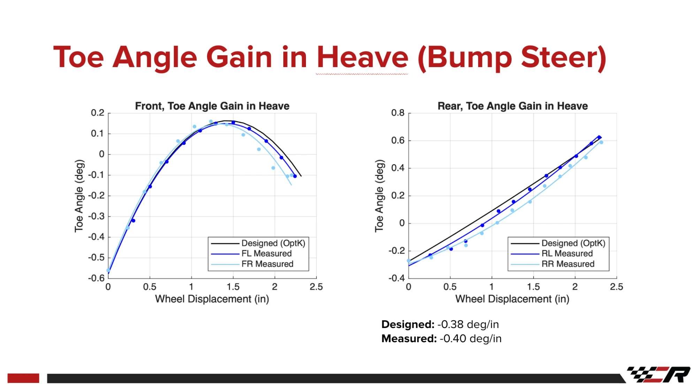
4.3Zero Bump Steer on ARG27
For ARG27 we changed to zero bump steer, and therefore zero ride steer, at the front and the rear. Toe change in heave adds understeer or oversteer that the driver does not ask for. We do not want that from the kinematics, because we can get the balance we want from elsewhere on the car.
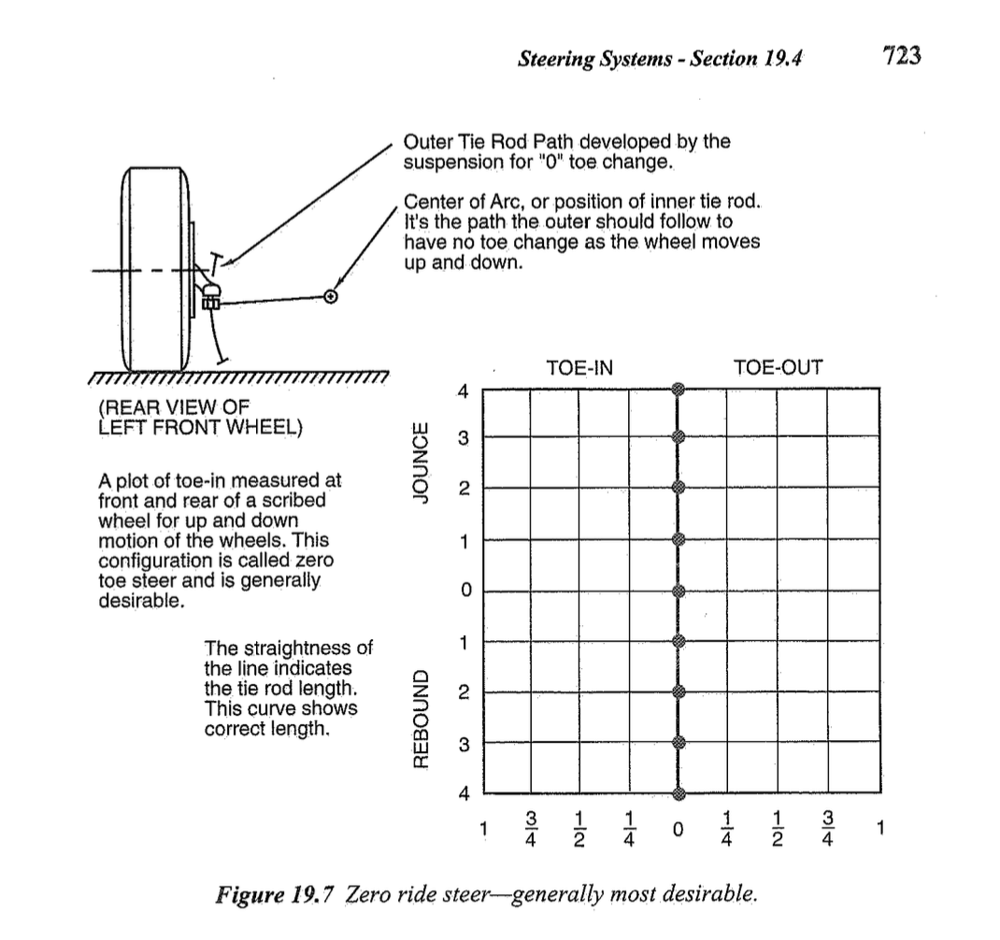
4.4Moving the Toe and Steering Links
As the wheel moves up and down, the A-arms move the outer point of the toe link (rear) or steering link (front) along a path. The link itself swings the outer point along an arc around its inner point. If the two paths do not match, the link pushes or pulls on the upright as the wheel moves, and the wheel steers.
For zero bump steer, the link has to follow the same arc as the path the suspension sets. That means the inner point sits at the center of that arc and the link is the right length, as in Figure 4. On ARG26 the links did not follow that arc, so for ARG27 we moved the inner and outer pickup points of the toe and steering links and reran the heave sweep in OptimumK until the toe change was close to zero across the travel.
5Ackermann
ARG26 used 12% Ackermann. The methodology for choosing the ARG27 Ackermann is in the Ackermann section below.
6Rocker Pickup Points
The rocker pickup points were moved on ARG27 for better packaging.
7Anti-Roll Bar
On ARG27 the front anti-roll bar moves up 0.5 in so the car meets the foot well template rule, and the rear anti-roll bar moves up by the same amount.
| Axle | OptimumK point | ARG26 z (in) | ARG27 z (in) |
|---|---|---|---|
| Front | Drop link left: Anti-Roll Bar | 17.525 | 18.025 |
| Front | Chassis left: Pivot | 17.525 | 18.025 |
| Rear | Drop link left: Anti-Roll Bar | 14.629 | 15.129 |
| Rear | Chassis left: Pivot | 14.629 | 15.129 |
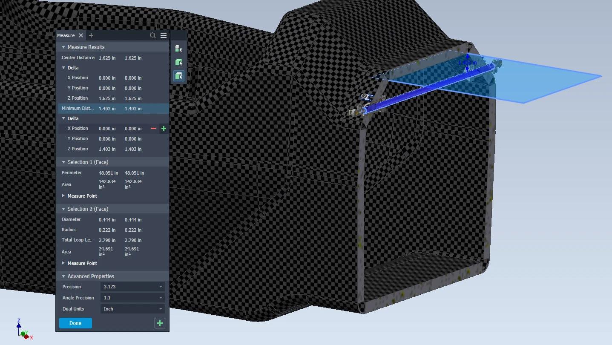
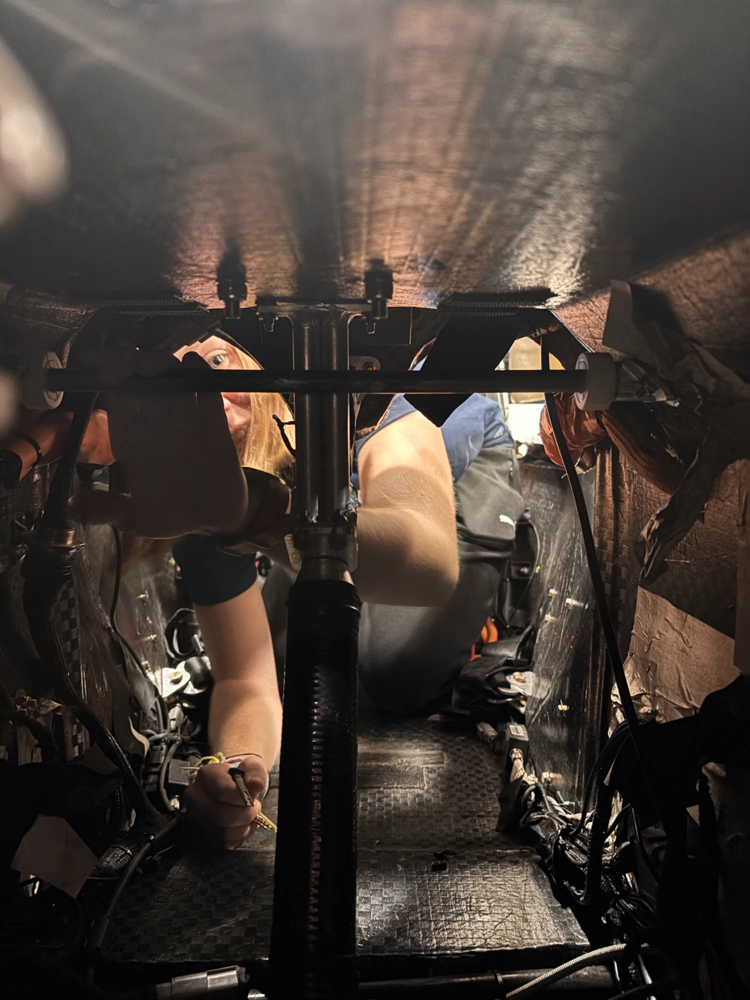
Tires
Lateral force plots from TTC tire data, comparing Hoosier tire candidates.
1Data
All plots on this page use run B2356run8.mat from the TTC (Tire Test Consortium) Round 9 data, in the MATLAB format with USCS (US customary) units.
2Plots


Ackermann
The methodology used on ARG27 to determine what Ackermann geometry to design the car to.
0Introduction
The goal is to determine what Ackermann geometry we should design our car to. This document outlines the methodology used on ARG27 to determine an Ackermann percentage.
1Background
1.1What is Ackermann?
Ackermann steering describes the relationship between the steering angles of the inside and outside front tires during a turn.
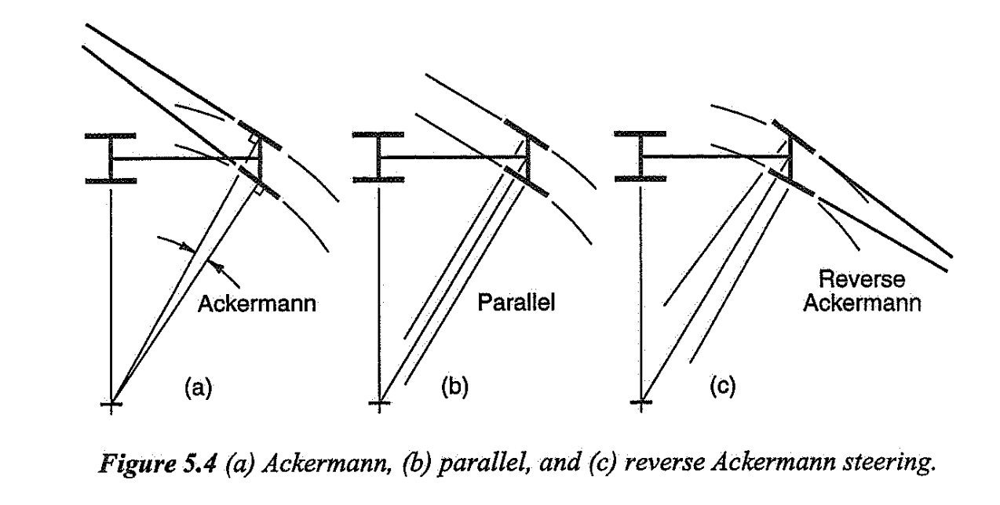
1.2Defining Our Model and Variables
The analysis models the car in steady-state cornering at a cornering radius R.
- Steering angle, δ
- The angle between the vehicle's x-axis and the wheel plane.
- Attitude (sideslip) angle, β
- The angle between the vehicle's x-axis and the velocity vector at a specified point. In a bicycle model, we introduce the front and rear attitude angles βF and βR (see Figure 2). In a full-car model, we introduce four attitude angles, βFL, βFR, βRL, βRR, one for each corner (see Figure 3).
- Slip angle, α
- The angle between the wheel plane and the wheel's velocity vector. In a bicycle model, we introduce the front and rear slip angles αF and αR (see Figure 2). In a full-car model, we introduce four slip angles, αFL, αFR, αRL, αRR, one for each corner (see Figure 3).
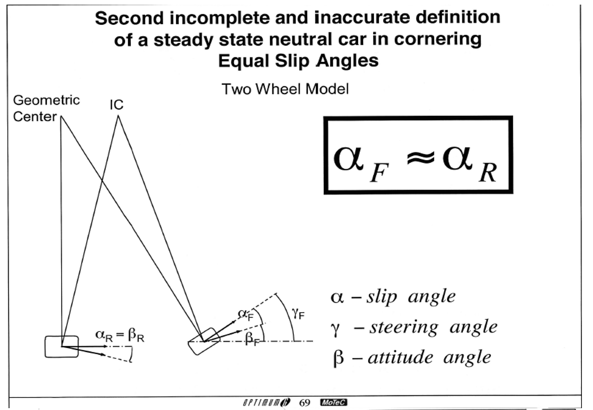
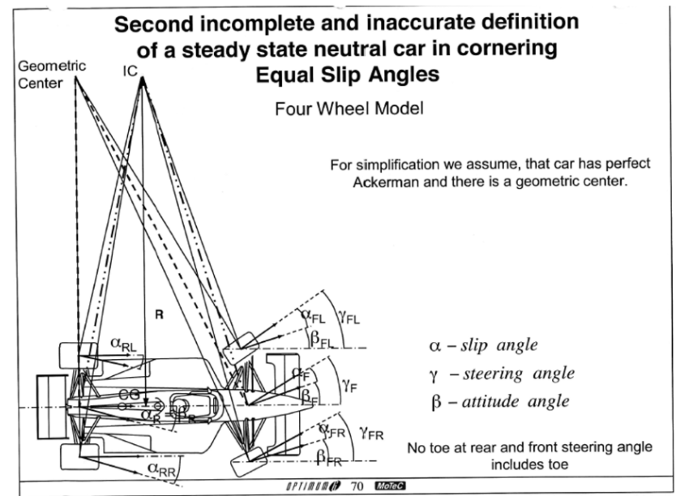
2Pure Ackermann (No Slip)
We still assume steady-state cornering, now with zero slip angle at every tire. Purely geometrically, the inner and outer tires travel on different radii, so to have no slip they must be steered to different angles. These angles can be calculated from the geometry as follows, where L is the wheelbase, T is the track width, and R is the cornering radius.
Inner wheel steering angle:
δin = tan−1( L / (R − T/2) )
Outer wheel steering angle:
δout = tan−1( L / (R + T/2) )
Since L and T are fixed by the vehicle architecture, the only variable that affects the steering angles is the cornering radius R.
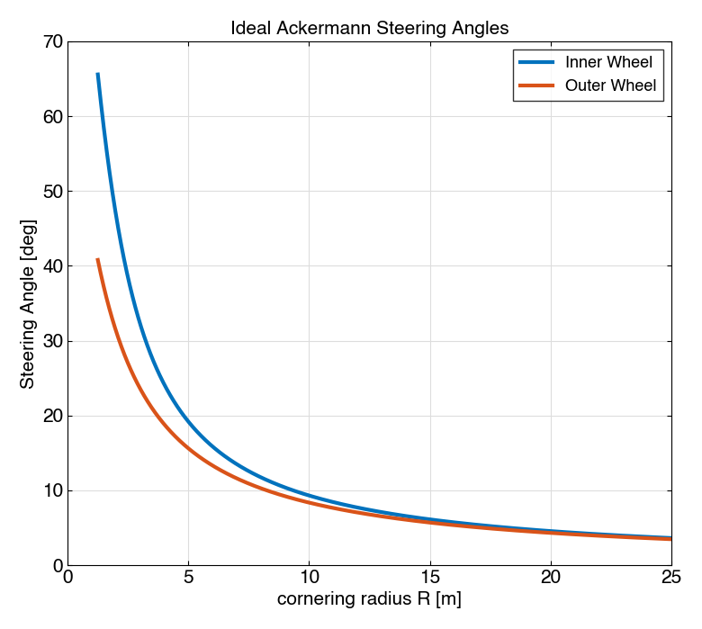
Both steering angles decrease as the cornering radius increases. This makes intuitive sense, since a wider turn needs less steering. Because we are interested in Ackermann, the difference between the inner and outer steering angles, we take the difference:
Ackermann steering angle difference:
Δδ = δin − δout
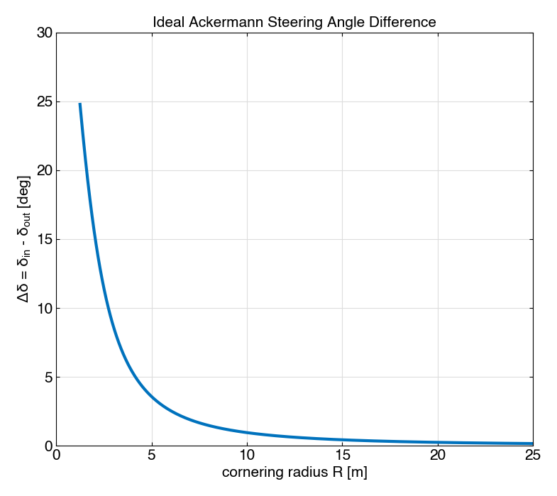
The steering angle difference decreases quickly as the cornering radius increases and approaches 0. This graph may suggest that Ackermann varies a lot with cornering radius. First, though, we should specify the range of cornering radii the car typically operates in. The minimum and maximum values are taken from Endo's report.
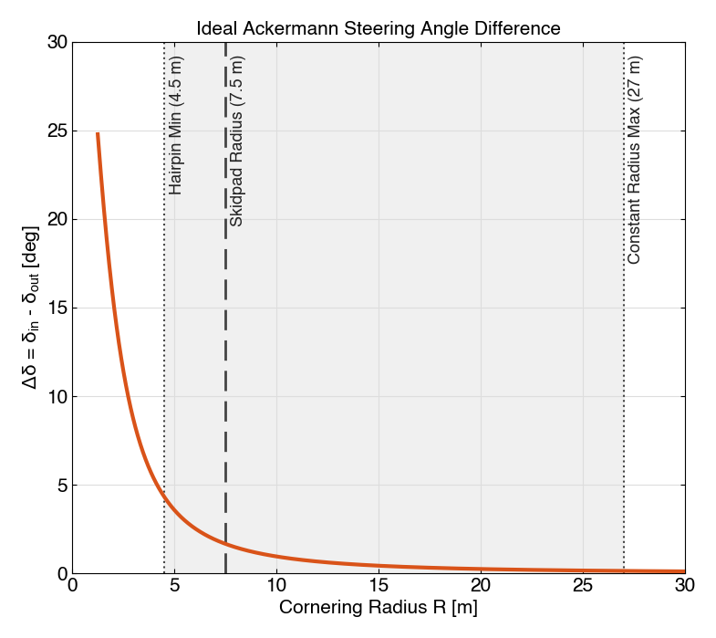
The takeaway from this graph is that, still assuming no slip, the steering angle difference for pure Ackermann ranges from 0° to 5°.
3Incorporating Slip Angles
Section 2 determined the required steering angles assuming all four tires have zero slip angle. This condition is useful for establishing the geometric Ackermann baseline, but it does not accurately represent a race car at significant lateral acceleration. To generate lateral force, a tire generally operates at a nonzero slip angle.
We now introduce αin and αout to represent the slip angles of the inside and outside tires.
Δδdesired = Δδgeo + (αin − αout)
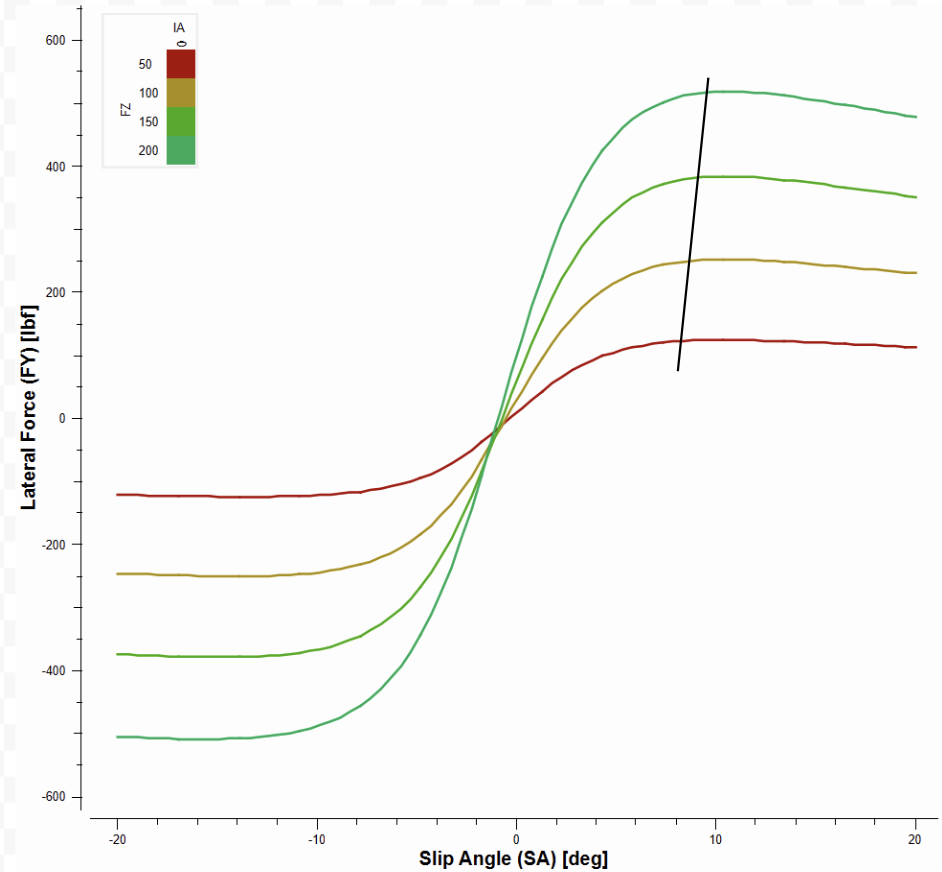
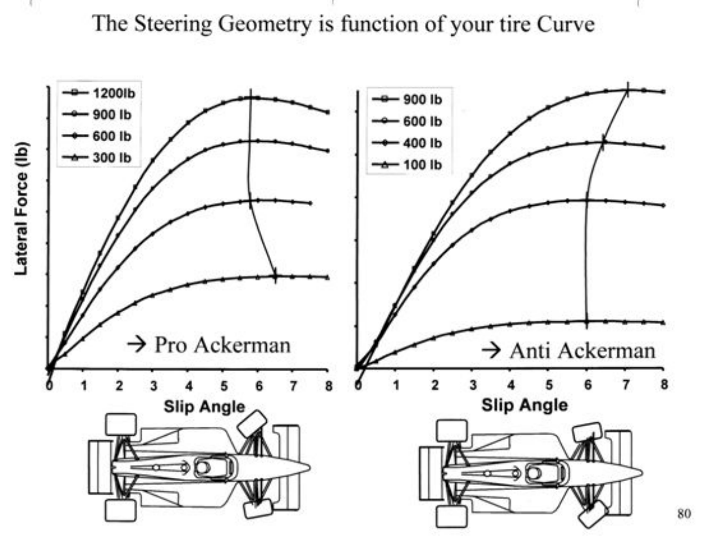
| Slope Condition | Tire Behavior | Required Geometry Impact |
|---|---|---|
| Positive SlopePeak slip angle increases with load | The heavily loaded outside tire needs a higher slip angle than the lightly loaded inside tire. | Demands Reverse (Anti-) Ackermann: You must steer the outside wheel more than the inside wheel. This is common in high-downforce racing like Formula 1. |
| Negative SlopePeak slip angle decreases with load | The lightly loaded inside tire needs a higher slip angle than the outside tire to reach its peak grip. | Demands Positive Ackermann: You must steer the inside wheel more than the outside wheel. This matches traditional low-speed geometric Ackermann. |
| Zero SlopePeak slip angle is independent of load | Both tires reach their maximum cornering capacity at the exact same slip angle regardless of weight transfer. | Demands Parallel Steering: Both wheels should be steered at identical angles relative to the chassis to track optimally. |
Peak grip here stays around the same slip angle, which influences us to go for more parallel steering.
4Ackermann Kinematics
4.1Defining % Ackermann
%Ack = 100 × (δin − δout)actual / (δin − δout)100%
Both differences are evaluated at the same average steer angle.
- 100% = pure Ackermann (Section 2)
- 0% = parallel
- Negative = reverse Ackermann
4.2How the Linkage Sets Ackermann
Ackermann is set by the plan-view geometry of the steering links:
- the outboard steering pickup on the upright relative to the steering axis;
- the steering rack's fore-aft position and height.
A real linkage does not give a constant %. It changes with steer angle, so it must be checked across the full steering range in OptimumKinematics.
5Case Analysis
To be filled out.
6Ackermann Impact on Understeer
To be filled out.
7References
- Racecar Engineering, "Tech Explained: Ackermann Steering Geometry." racecar-engineering.com
- W. F. Milliken and D. L. Milliken, Race Car Vehicle Dynamics, SAE, 1995: Ch. 5 (pp. 128–137, Figs. 5.4, 5.16), §19.2 (pp. 714–716).
- M. Endo, ARG13 Suspension Technical Report, Cornell Racing, Spring 2013.
- S. Munver, ARG26 Suspension System Design Technical Report, Cornell Racing, Fall 2025.
- FSAE Tire Test Consortium, Round 9 data, Calspan, January 2022.
- Steering Ackerman (PDF), slide 80. courses.diyguru.org
- "Getting to Grips" (PDF), OptimumG. students.optimumg.com